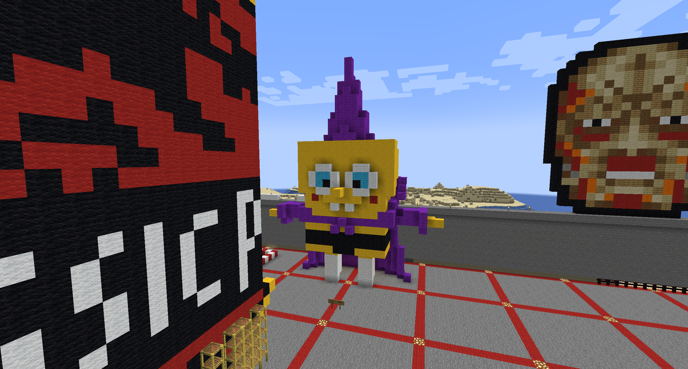
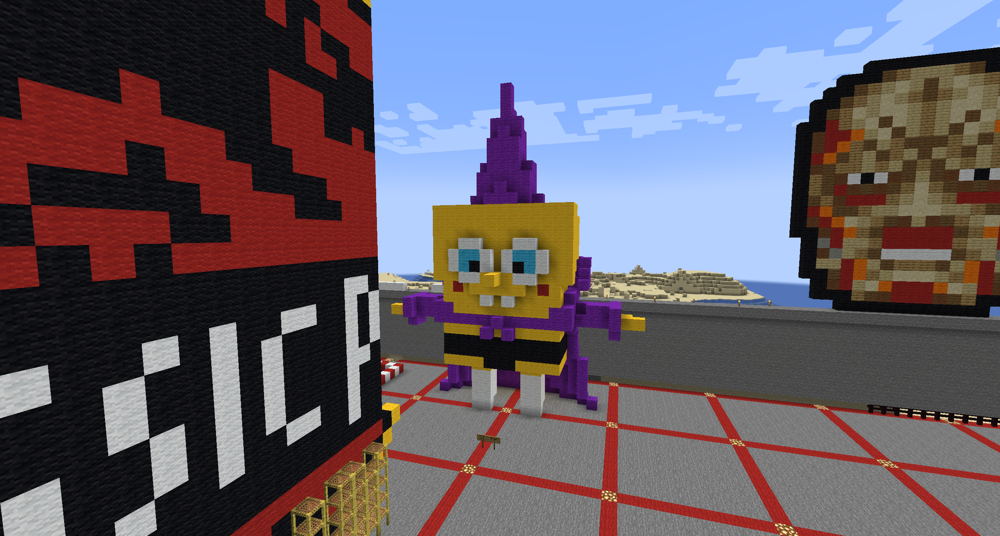

About Me.
Matthew Utz is a Digital Media Artist who uses digital technologies to explore many social concepts. His work is predominantly done through the creation of images with tools such as Photoshop, but he does use various other methods to produce his work.